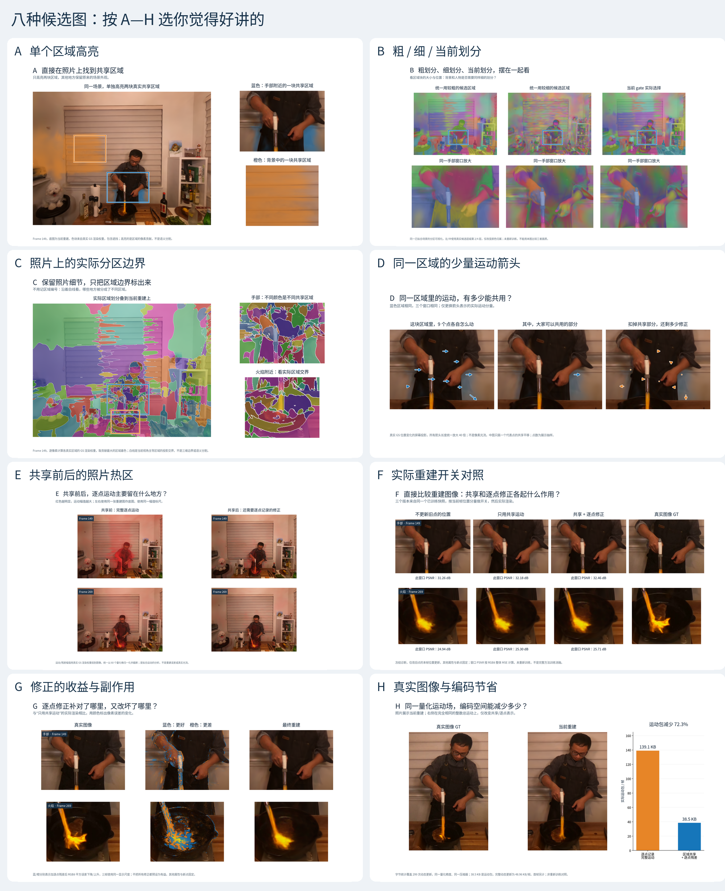
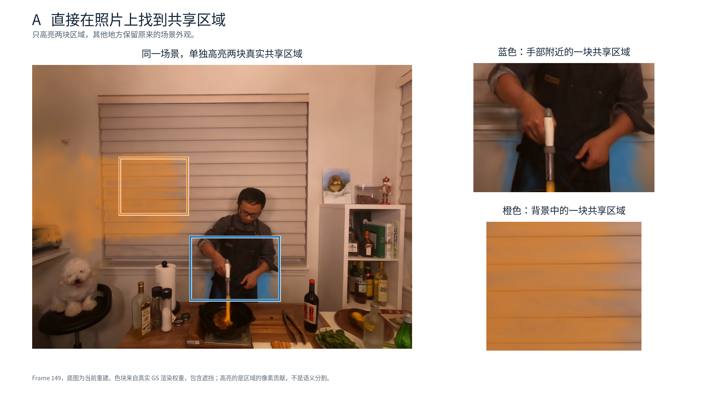
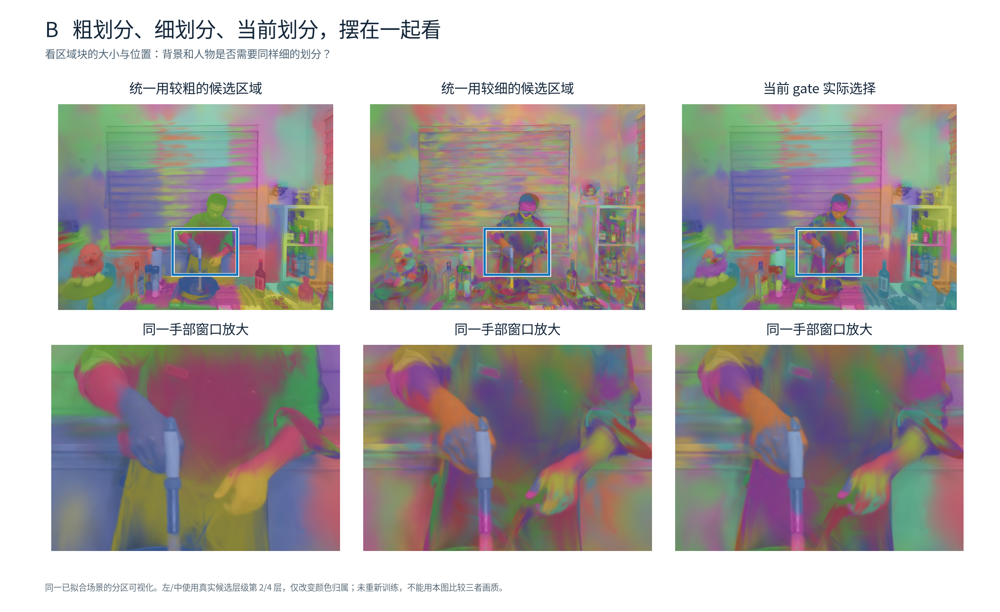
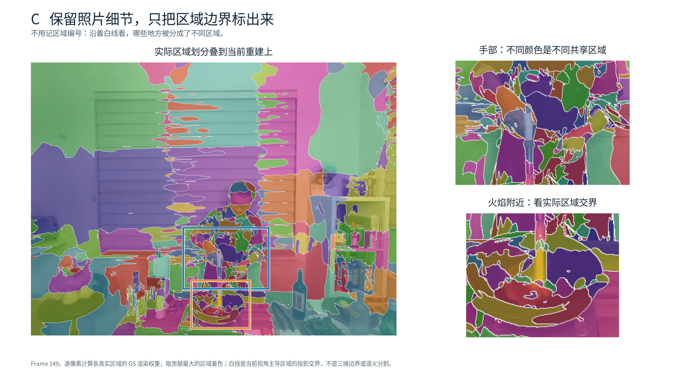
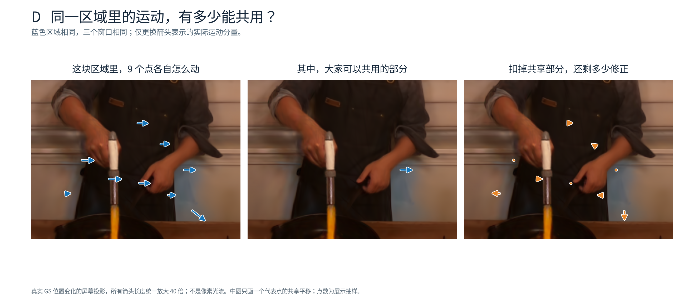
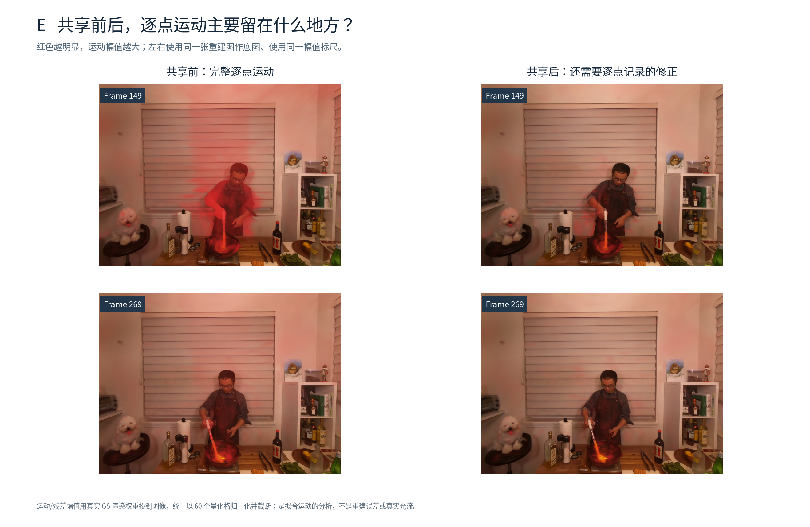
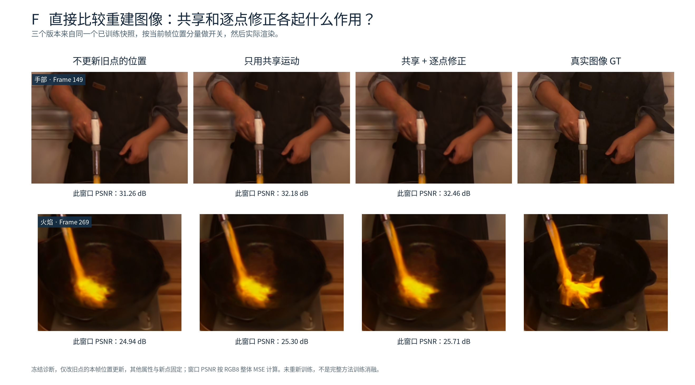
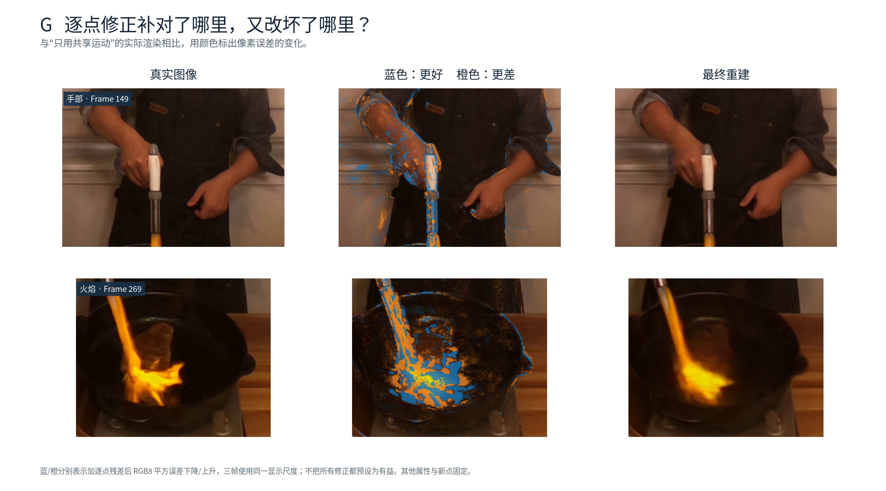
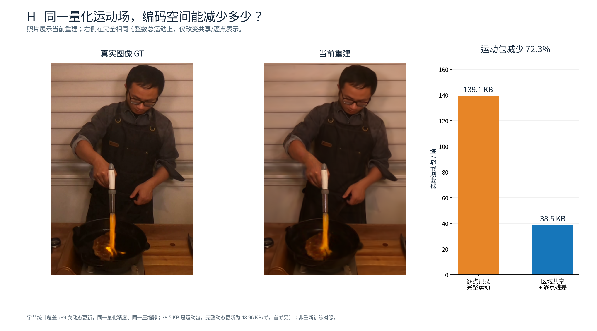

每张只讲一件事。先看总览，再点击 A—H 查看原图；无需记区域编号或层级数字。

最容易指着照片讲：蓝色这块、橙色那块，各是一块真实共享区域。

适合讲粒度选择：在同一场景上，把候选粗划分、细划分和实际选择并排看。

适合讲最终分区长什么样：保留场景外观，用颜色和白线标出当前视角的主导区域。

适合讲为什么能共用运动：同一块区域里的 9 个真实 GS，从总运动到共享部分，再到剩余修正。

适合讲共享吸收了哪里的运动：背景照片不变，只看红色运动热区怎样变化。

最像直观消融：不更新旧点位置、只用共享、加逐点修正和 GT，直接比较手部/火焰。

适合分析不足：蓝色更接近 GT，橙色反而变差。可以检查逐点修正是否都值得保存。

适合报告总体价值：展示当前重建，同时说明同一整数运动场的运动包可以少存多少。

A/C 使用原生 GS 合成器计算真实区域贡献，包含其他区域造成的遮挡。C 对每个像素选择贡献最大的旧点区域，色块边界是投影交界，不是三维分区面或语义分割。
B 的固定粗/细列只可视化保存的候选层级，并未训练相应基线；不能通过这些图声称画质更好或 gate 已被独立验证。D 是 GS 位移投影，不是像素光流；箭头统一放大 40 倍。
F/G 是冻结渲染诊断：只改变本帧存活旧点的位置，全部当前透明度、颜色、尺度、旋转与新点位置保持固定，不代表重新训练后的方法优劣。Frame 29 中不更新旧点位置的全图 RGB8 PSNR 反而高于完整更新，全部数据保留在 evidence.json；这些图不预设所有更新都有益。
H 在相同整数总运动、量化精度与压缩器下比较实际运动包，非重训消融；替代包独立使用原前一帧参考。动态完整包/共享首帧单列，避免把运动包当成全部存储。
三帧完整重建的 RGB8 像素均与历史保存图逐位一致。此次只有读取、冻结渲染和制图，没有训练或修改历史模型，也未测量 FPS。
原始运行：/home/gamer-02/Documents/DeepLearning/my4dgs/output/flame_steak_1028/fs_cov150_300/20261028T133500_9a96a2。制图脚本 scripts/plot_motion_figure_candidates.py；原生证据脚本 scripts/render_motion_figure_candidates.py。